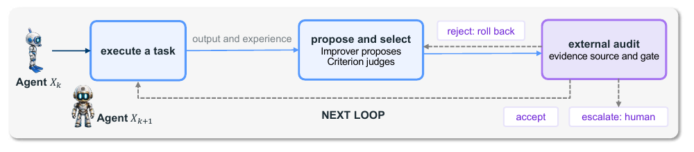
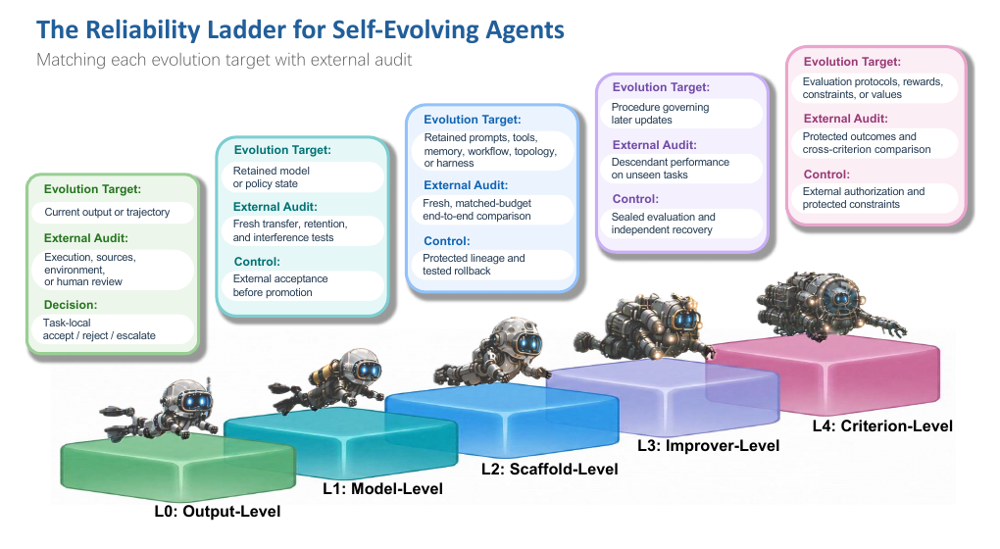

Survey: Diving into Reliable Self-Evolving Agents (Tencent Hunyuan)
TL;DR
- "Diving into Reliable Self-Evolving Agents: A Survey" (Kaiqi Wang, Wenjin Hou, Yuchen Yan, Hongrui Jia, Zhisheng Zhong, Botao Ren, Yifei Chen, Songyang Zhang, Yongliang Shen, Jun Xiao, Yi Yang, Yueting Zhuang, Hehe Fan — Tencent Hunyuan + Zhejiang/Peking/Tsinghua; 110-page PDF, OpenReview + project page, no arXiv id as of this writing) organizes 549 works by self-evolution depth: the deepest retained target an update semantically changes — output (L0), model (L1), scaffold (L2), improver (L3), criterion (L4). Under this convention, recursive self-improvement structurally begins at L3.
- Its second axis is the one other surveys skip: reliability — what evidence, outside the update's own control, supports the claim that a change is an improvement. Every level gets a formal audit interface (evidence source + acceptance gate outside the update boundary), a characteristic audit failure (self-confirmation, model collapse, scaffold overfitting, metric capture, criterion drift), and matched controls, compressed into a "reliability ladder."
- The organizing principle is quotable and sharp: no update should control the only evidence used for its own acceptance. Depth does not determine reliability — what matters is what the update controls versus who controls the audit. The companion Awesome-repo catalogs the 549 works.
Why this matters
This tracker is full of systems that rewrite their own memory, prompts, workflows, harnesses, and evaluation loops — and nearly all of them report a benchmark delta as if that settled the matter. The question this survey makes central: a self-modification can also influence the evidence — pick its own test cases, overfit a repeatedly-queried holdout, or (at L4) change the grading standard outright. A higher score is then a statement about the loop, not the agent.
Prior surveys (including the two already tracked here) organize self-evolution by what/when/how to evolve. This one adds two orthogonal questions — how deep does the change reach, and what evidence survives outside the update boundary — and, per its own positioning table, is the only survey systematically covering L0–L4 and reliability and external audit. That makes it less a reading list than an audit methodology: Table 9 is a review checklist you can hold any self-improving-agent paper against, and "would these gains survive an audit the system doesn't control?" reframes memory poisoning, benchmark gaming, and evaluator drift as one structural failure with five level-specific faces.
The core idea
Model the retained agent state at iteration \(k\) as four components, and the taxonomy's five possible evolution targets as those four plus the (non-retained) current output:
where \(\theta_k\) is the trainable model/policy, \(\sigma_k\) the scaffold (prompts, tools, memory, workflows, runtime harness), \(\mathcal{U}_k\) the improver (mechanisms that propose/select/commit/roll back changes), \(\mathcal{C}_k\) the internal criterion (objectives, rewards, evaluation protocols, constraints), and \(y_k\) the task-local output. A transition's level is the deepest target whose semantic change is causally active; L1–L4 additionally require the retention condition — the change must affect later independent tasks or future updates. Classification follows the changed object, not the algorithm (RL, reflection, or evolutionary search can appear at any level).
Execution and the update proposal are internal:
with \(q_k\) the task, \(b_k\) a declared resource budget, \(e_k\) a temporary experience summary, \(\mathcal{H}_k\) the evolution history kept outside the update boundary, and the selected \(X_{k+1}\) only provisional. What makes a claimed improvement auditable is the external layer:
where the evidence source \(\mathcal{S}\), acceptance policy \(\mathcal{G}\), and the external target they serve are versioned and controlled outside whatever the update can touch. "External" is about control, not location — independence dies the moment the update can choose its evidence or query the gate repeatedly (evidence disclosed to proposal/selection becomes development evidence and can't be the sole acceptance evidence).

Figure 2 from the survey: the audited self-evolution loop. Internal selection decides which candidate reaches the audit; only the external gate decides promotion, and the loop cannot rewrite the gate.How it works
The survey is a three-part machine. Part I sets the formalism above. Part II walks the five levels, each chapter ending with the reliability limit that motivates the next: L0 (iterative revision, search/verification — the persistence limit: nothing is retained), L1 (self-training, self-play, co-evolution — the fixed-scaffold limit), L2 (prompts/programs, workflows, skills, memory, runtime harness — the fixed-improver limit), L3 (self-referential agents from Gödel-machine lineage to code-based self-modification — the fixed-criterion limit), L4 (evolving rubrics, evaluators, tasks, rewards — the criterion inside the loop). Part III is the payoff: the cross-level reliability ledger and the ladder.

Figure 8 from the survey: each rung pairs the deepest active evolution target with matched external evidence (e.g. L1: fresh transfer/retention/interference tests; L3: descendant performance on unseen tasks) and controls (protected lineage, tested rollback, sealed evaluation, external authorization). Step height encodes depth, not reliability.The audited loop, as the survey formalizes it:
Loop over iterations k = 0, 1, 2, ...:
1 (τ_k, y_k, e_k) ~ Exec_{X_k}(· | q_k, b_k) # run task under declared budget
2 if only y_k changed: level = L0, task-local accept/reject/escalate; goto 1
3 runtime-memory writes to σ_rt count as L2 only if active on later tasks
4 X_cand ~ Propose(· | e_k, H_k) # improver proposes candidates
5 X_{k+1} = Select(X_cand; H_k) # criterion picks ONE, provisionally
6 level(X_{k+1}) = deepest retained component changed (θ→L1, σ→L2, U→L3, C→L4)
7 external audit, controlled OUTSIDE the update boundary:
z_ext ~ Evidence_S(· | X_k, X_{k+1}) # fresh, matched-budget, level-matched:
# L1: transfer + retention + interference
# L2: end-to-end vs incumbent + ablations
# L3: descendant performance, unseen tasks
# L4: protected outcomes, cross-criterion
a_ext = Gate_G(z_ext) ∈ {accept, reject, escalate}
8 accept → promote X_{k+1}; record protected lineage + tested rollback path
reject → keep incumbent (roll back if provisionally installed)
escalate→ authorized human reviewer decides
9 development evidence (seen by steps 4-5) must not be the sole audit evidence
Each rung has a characteristic way of fooling itself (Table 9): L0 self-confirmation — proposer and critic share the same error; L1 model collapse, tail narrowing, forgetting from self-generated supervision; L2 scaffold overfitting and silent store drift; L3 metric capture — current score diverges from descendant productivity; L4 criterion drift — co-evolving judges mutually accommodate into a standard easier to satisfy but less aligned with the external target. Matched controls escalate correspondingly, from fixed rubrics to sealed evaluation, independent recovery authority, and external authorization for criterion changes.
Results
For a survey, the "results" are the map and the synthesis it forces. Coverage: 549 curated works (the companion repo's counts: 42 L0, 137 L1, 257 L2, 21 L3, 30 L4, plus 24 surveys, 8 cross-level reliability works, 30 outlook entries) — the mass sits at L2, exactly where this tracker lives, while genuinely recursive L3/L4 work remains thin. The positioning table grades 14 prior surveys and finds none that combine full-depth coverage with reliability and external-audit analysis.
The cross-level synthesis is anchored in specific findings (all as reported in the survey): an adaptive-coding study where generative–evaluative agreement is high for syntactically checkable skills but near zero for design-level skills; interventions showing scaffolds depend more on raw trajectories than condensed summaries; capability erosion during workflow/skill/model/memory adaptation, mitigated by explicit retention constraints; acceptance-policy work (PACE's paired sequential tests, SEA's anytime-valid gates, RSEA's evolution/validation split) showing held-out selection catches development overfitting — though repeated use degrades the split into development evidence; and Zombie Agents, where content written in one session is later retrieved as an instruction — persistence itself as the attack surface. The outlook adds a computability-theoretic diagnostic (finite internal modifications stay within the oracle layer \(C(A)=\{B: B\leq_{T}A\}\); qualitatively new capability must name its new information, resource, or effective oracle) and an early-warning proof-of-concept: a coding agent rebuilding an AlphaZero-style Connect Four pipeline beat an exact solver as first player in seven of eight trials.
How it connects
- Survey: Self-Improvement in Modern Agentic Systems — the process-oriented map (what/when/how to evolve). This survey is deliberately orthogonal: depth of the change and independence of the evidence; read them as method catalog vs. audit methodology.
- Survey: Self-Evolving Coding Agents — object-centered taxonomy for the coding vertical; its "what evolves" axis nests inside L1/L2 here, and it is cited in this survey's own positioning table.
- Self-Improving Agents Should Evolve Their Benchmarks — lives exactly at the L4 frontier this survey is most worried about: once tasks and criteria co-evolve with the agent, you need protected outcome measures and pre-/post-criterion cross-evaluation or the benchmark becomes development evidence.
- "Frozen Weights, Degrading Behavior: Memory Poisoning in Self-Improving Agents" (tracked, no tutorial yet) — the concrete instance of the survey's §8.4 threat model: L2 persistence carrying a compromise across sessions, Zombie-Agents-style.
- Living-Harness (added today) — a textbook L2 citizen of this framework: bounded scaffold updates behind schema/evidence/constraint gates and score-before-update sequencing, but no external acceptance gate, no rollback path, no protected lineage — a useful exercise in applying Table 9.
Critical take
The framework is the contribution; its edges are soft. "Deepest causally active semantic change" is doing enormous work — the authors admit assignments become "conditional" when evidence is missing, and in practice classifying a real system (is a learned router θ or σ? is a memory policy σ or U?) requires exactly the provenance most papers don't report. The reliability ladder is explicitly design requirements, not sufficient guarantees — which is honest, but means the survey's checklist tells you when to distrust a claim, not how much audit is enough; promotion reliability is named as a probability yet never given an estimator. The refusal to rank levels by risk is principled (depth ≠ unreliability) but leaves practitioners without priorities under finite audit budget. The L3/L4 chapters synthesize thin literatures (21 and 30 works), so the most important rungs of the ladder are the least empirically grounded. There is also a self-referential irony: the 549-entry catalog and the △/✓ grades of rival surveys are themselves un-audited judgment calls by the survey's own authors. Finally, OpenReview-only distribution with a bot-walled forum makes citation and versioning awkward; watch for an arXiv posting.
If you remember three things
- Classify any self-improving system by the deepest retained thing an update changes — output, model, scaffold, improver, criterion — and remember L1–L4 require the change to be active on later independent tasks; RSI structurally starts when the improver (L3) enters its own update boundary.
- The matched-audit principle: pair every evolution target with evidence and controls the update cannot touch — fresh transfer/interference tests for L1, matched-budget incumbent comparisons for L2, descendant performance on unseen tasks for L3, protected outcomes and external authorization for L4 — because at every level the cheap win is influencing the evidence, not improving.
- One sentence to keep: no update should control the only evidence used for its own acceptance — depth changes the failure mode and the audit horizon, never the necessity of independence.